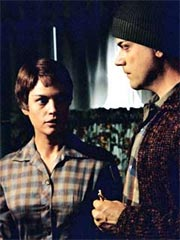
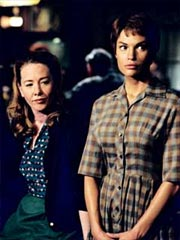
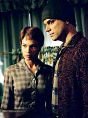
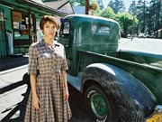
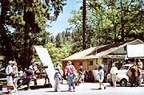
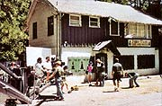
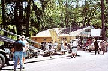
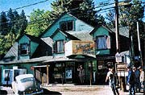

|
MANCHETE
DO EPISÓDIO
Volta
a 1957 se rende ao humor e não
chega a comprometer fatos "históricos"
Episódio
anterior | Próximo
episódio
Sinopse:
A Enterprise completa um ano de missão e é tempo de avaliação da tripulação. Archer, Trip e T'Pol estão compartilhando uma refeição e os dois humanos expressam em um brinde sua satisfação de ter a Vulcana a bordo. Archer aproveita o ensejo para matar a curiosidade: ele viu na ficha de serviço de sua primeiro-oficial que, durante o período em que esteve no Complexo Vulcano em Sausalito, ela se ausentou por alguns dias para visitar Carbon Creek, uma cidadezinha de mineradores na Pensilvânia. Intrigado pelo que ela pode ter ido fazer lá, não lhe resta nenhuma alternativa senão perguntar.
 T'Pol em princípio desconversa, dizendo ser um assunto pessoal, mas quando Archer e Trip insistem, ela diz que foi visitar o local em que aconteceu o primeiro contato entre humanos e Vulcanos. Os dois humanos dizem que ela então errou feio, pois todo mundo sabe que o primeiro contato ocorreu em Montana, no dia 5 de abril de 2063, logo após o primeiro vôo propelido por um motor de dobra ser realizado por Zefram Cochrane.
A Vulcana diz que essa não é toda a verdade. Havia uma nave Vulcana nas imediações da Terra em 1957, estudando o lançamento de seu primeiro satélite artificial, o Sputnik. Um acidente, entretanto, fez com que a nave e seus quatro ocupantes fizessem um pouso forçado próximo a Carbon Creek, Pensilvânia.
Entre os tripulantes estava a bisavó de T'Pol, T'Mir. Antes de cair, a nave enviou um pedido de socorro ao Alto Comando Vulcano, mas não havia como saber se a mensagem havia sido recebida. Na queda, o capitão da nave acaba morrendo, deixando T'Mir no comando da tripulação. Os três Vulcanos remanescentes inicialmente tentam sobreviver na floresta, mas logo que as rações acabam eles se vêem na necessidade de tomar alguma atitude mais radical. Mestral, o mais rebelde dos três, decide que é melhor ir à cidade tentar obter algum alimento. T'Mir discorda e ordena que ele não vá, mas Mestral não obedece. A Vulcana acaba então por acompanhá-lo, instruindo-o a não falar com ninguém.
 A primeira coisa que os dois fazem, chegando à cidade, é roubar algumas roupas que façam com que eles passem despercebidos em meios aos humanos. Em seguida, ambos visitam um bar, na esperança de conseguir algum alimento, mas descobrem que vão precisar de "moeda". Um local, de nome Billy, oferece a oportunidade, em um jogo de bilhar. Ele desafia Mestral a vencê-lo. Caso o Vulcano ganhe, levará o dinheiro em jogo. Se Billy vencer, T'Mir terá de sair com ele. A Vulcana não quer que Mestral aceite o desafio, mas o Vulcano diz que o jogo é meramente geométrico e que não há risco de ele perder.
Após um início ameaçador de Billy, Mestral acaba mesmo vencendo e obtendo o dinheiro necessário às compras. Eles retornam à floresta, mas acabam percebendo que há uma chance real de que seus superiores nunca tenham recebido o pedido de socorro e eles sejam obrigados a viver na Terra por um bom tempo. Decidem então mudar para a cidade e conseguir alguns empregos. Originalmente todos cientistas, os Vulcanos são obrigados a trabalhar em tarefas triviais. Mestral vai para as minas, T'Mir passa a trabalhar no bar e Stron torna-se encanador.
Enquanto T'Mir e Stron passam a repudiar cada vez mais o barbarismo humano, e a constante ameaça do aniquilamento nuclear, Mestral fica fascinado com o modo de vida e a compaixão humanas. Além de se tornar um apreciador de programas de televisão, ele começa a interagir com os humanos de forma muito mais íntima, chegando até a despertar o interesse de Maggie, a barwoman do mesmo local em que T'Mir trabalha. Quando Mestral começa a corresponder à mulher, T'Mir realmente começa a temer pelo perigo de serem descobertos pelos humanos.
 A Vulcana só começa a ampliar sua apreciação dos terráqueos depois de conversar com Jack, filho de Maggie, um rapaz inteligente que está a ponto de entrar na faculdade. Sua apreciação por astronomia e por ciência e sua humildade e dedicação aos estudos fazem com que T'Mir acredite que há uma esperança para a humanidade afinal. Jack pretende estudar no ano seguinte com uma bolsa parcial, mas só poderá fazê-lo se conseguir juntar as economias necessárias. Há uma "caixinha" no bar acumulando doações para ele, mas as coisas não vão bem.
E o desenrolar dos fatos toma um rumo inesperado quando ocorre um acidente na mina, que prende diversos colegas de Mestral em um túnel que irá sufocá-los em questão de horas. Com uma arma Vulcana, ele poderia facilmente libertá-los, mas correria o risco de ser descoberto. T'Mir tenta proibi-lo de tomar tal atitude, mas ele não obedece, influenciado pela compaixão humana que ele tanto aprecia. Diante disso, a Vulcana decide auxiliá-lo, para garantir que ninguém o veja.
Mestral acaba salvando os mineiros e se tornando ainda mais popular. Felizmente, ninguém descobre como ele conseguiu a façanha, mantendo os Vulcanos seguros.
Os três pareciam já estar convencidos de que passariam na Terra o resto de suas vidas quando receberam uma mensagem do Alto Comando Vulcano, dizendo que uma nave de resgate estaria a caminho.
A notícia de que eles estariam partindo se espalha, entristecendo os hospitaleiros moradores de Carbon Creek. E é com pesar que T'Mir recebe a notícia de que Jack não poderá ir à faculdade, uma vez que não conseguiu juntar dinheiro suficiente. Num ato de rebeldia, ela decide ajudar o rapaz, interferindo diretamente com o desenvolvimento da cultura humana.
Ela vai a um escritório de patentes e vende os direitos sobre uma invenção que, segundo sua descrição ao comprador, "iria revolucionar o mundo". Um tecido aderente que poderia exercer função similar à de fita adesiva -- velcro. O homem de negócios rapidamente vê o potencial da "invenção" e a compra. T'Mir pega o dinheiro e, anonimamente, deixa como doação na caixinha de Jack, tornando possível sua ida à faculdade.
 É hora de partir, mas Mestral diz que ainda há muito o que aprender sobre os humanos e que ele pretende ficar. Mais uma vez seus colegas tentam fazê-lo mudar de idéia e mais uma vez eles fracassam. T'Mir acaba acatando a decisão de Mestral e, quando a nave Vulcana de resgate chega, só ela e Stron vão a bordo, alegando que tanto o capitão quanto Mestral haviam morrido.
T'Pol termina de contar o episódio, e Archer e Trip estão estarrecidos. Ela acabou de rescrever nossos livros de história, eles dizem. Mas a Vulcana acaba concluindo seu relato de forma vaga, não esclarecendo se a história realmente aconteceu de fato. Archer e Trip acabam achando que tudo não passou de uma ficção. Mas, quando T'Pol volta a seus aposentos, o senso de nostalgia toma conta e ela tira de suas coisas uma velha bolsa que sua bisavó T'Mir havia trazido de Carbon Creek, Pensilvânia...
Comentários:
"Carbon Creek" é um episódio que aposta num formato bastante incomum para
Jornada nas Estrelas. Ele não só cria todo o enredo em flashback (algo que não é tão incomum), como é protagonizado por personagens que não são os "titulares" da série. Um dos raros momentos em que isso aconteceu em Jornada nas Estrelas foi no episódio
"11:59", de Voyager, que é protagonizado por uma antepassada de Janeway no ano 2000 -- uma tremenda bomba. Felizmente, T'Pol e sua bisavó conseguem um resultado bem mais satisfatório, apesar de nada original.
 Não é aquele episódio do qual você vá se lembrar com eterna paixão ou vá querer ver 'n' vezes -- numa segunda assistida, com as piadas já conhecidas, o segmento todo acaba perdendo muito de seu sabor. Mas, na primeira tacada, acaba sendo um belo atrativo para os fãs de nostalgia.
A começar pelos entusiastas da exploração espacial! Após um ano inteiro vendo a abertura de
Enterprise, que contém apenas cenas do programa espacial americano, é um prazer ver que os produtores se lembraram de que foram os russos os primeiros a iniciar a aventura rumo à fronteira final. Aqui, a razão para tudo acontecer é o primeiro satélite artificial da Terra, o Sputnik. O brinquedinho russo chega a ser visto em órbita logo no começo, na cena que talvez seja a mais significativa do episódio todo.
Tudo bem que o lançamento de um satélite artificial talvez não seja uma boa desculpa para justificar a presença de Vulcanos na órbita terrestre. Mas talvez seja um pouco demais considerar totalmente inviável tal coisa: pelo episódio, fica muito claro que a missão tem prioridade baixíssima junto ao Alto Comando Vulcano, dado o tamanho da nave e da tripulação a estudarem o Sputnik e o fato de a próxima expedição científica só voltar ao planeta em uns 20 anos (é o que diz Mestral, ao recusar a hipótese de partir e voltar numa segunda ocasião). Claramente, o interesse Vulcano pela Terra nesse momento da história não passa de mera curiosidade científica de meia dúzia de pesquisadores Vulcanos -- algo muito diferente do que acontece no verdadeiro
"Primeiro Contato" (mostrado no filme de mesmo nome), em que uma majestosa nave Vulcana vem dar as boas-vindas à humanidade na comunidade interestelar, após o histórico vôo inaugural de Zefram Cochrane com seu novíssimo motor de dobra, a bordo da Phoenix.
 É, portanto, no mínimo um exagero dizer que
"Carbon Creek" faz bagunça na continuidade. Obviamente esse encontro casual de Vulcanos e humanos não fez nenhuma diferença no fluxo normal da evolução da cultura terrestre (com a exceção, talvez, da introdução do velcro entre os humanos, que nem se compara a dar a capitalistas do século 20 a tecnologia do alumínio transparente, como a turma da
Série Clássica fez sem titubear em "Jornada nas Estrelas IV: A Volta Para
Casa"), deixando para o encontro de Cochrane todas as glórias -- como deveria ser.
Tudo bem, se você realmente quiser pegar no pé do episódio, pode dizer que é improvável que Mestral pudesse esconder sua identidade alienígena por 200 anos apenas usando um capuz. Mas fazer esse tipo de acusação, em Jornada, é como chover no molhado: todo episódio, em maior ou menor grau, exige suspensão da descrença por parte da audiência. Eu, por exemplo, estou perfeitamente confortável com a postura de confiar nas habilidades de Mestral em esconder seu segredo (ou ao menos mantê-lo entre poucos e discretos humanos) durante sua estadia na Terra.
Principalmente por ele ser um personagem tão simpático e carismático. É meio difícil engolir que um Vulcano, especialmente um numa organização militar, pudesse ser tão indisciplinado e... bem... emotivo. Mas é inegável que Mestral vai ganhando mais e mais a simpatia do telespectador ao longo do episódio. E suas atitudes trazem à tona as melhores qualidades do segmento: as anedotas.
Sim, o episódio na verdade se sustenta todo nessa idéia de que os telespectadores estariam dispostos a ver, por 45 minutos, as confusões que três Vulcanos podem fazer para se adaptar à vida na Terra dos anos 1950. É uma gracinha seguida por outra, sem uma história ou um andamento definidos. Por isso o episódio, apesar de ser bem produzido e escrito, se torna tão "batido" numa segunda assistida: quando já são conhecidas, as piadas não têm mais a mesma graça. E elas são praticamente tudo que há para apreciar por aqui.
A vida dos habitantes de Carbon Creek, na verdade, não passa de uma reciclagem do filme "Céu de Outubro" ("October Sky"), que conta a história de um rapaz que se empolga com o Sputnik e quer lançar seu próprio foguete, mas precisa interromper seus estudos para ir trabalhar como minerador. O próprio filme também é baseado em uma história real, de modo que
"Carbon Creek" não é só uma "carbon copy", como uma cópia da cópia.
 Originalidade, realmente, não é o forte. Embora a premissa de
Enterprise esteja contemplada, mostrando como Vulcanos podem aprender e se tornar pessoas melhores a partir da convivência com os humanos, não há qualquer novidade com relação ao que já havia sido apresentado nesse sentido em episódios anteriores. Mesmo T'Mir soa exatamente como sua
bisneta T'Pol no começo do primeiro ano, desdenhando das capacidades humanas. Ou seja: chuva no molhado total.
Outra coisa que já não é novidade na série é o uso gratuito de cenas sensuais. Temos aqui a chance de ver, por duas vezes, a silhuete de Jolene Blalock nua por trás de um lençol, quando ela está colocando suas recém-roubadas roupas terrestres. Não é tão ruim quanto a infame cena da câmara de descontaminação da nave, mas quase chega lá.
E uma das poucas novidades do segmento é negativa: uso de merchandising! Durante a narrativa de T'Pol, Trip comenta sobre o modo como os Vulcanos conseguiram ganhar dinheiro jogando bilhar, dizendo que lembrava "um daqueles velhos episódios de 'The Twilight Zone'". Uma nova versão de "The Twilight Zone" está sendo exibida pela UPN (mesma rede que exibe
Enterprise nos EUA) nessa temporada, e o programa entra no ar logo depois de
Enterprise!
 Mas, apesar de todos esses defeitos, nada muda o fato de que há momentos divertidos. A tal cena do jogo de bilhar provoca algumas risadas, Maggie surpreendendo Mestral ao beijá-lo, deixando o Vulcano desconsertado, é divertida e Stron proporciona a primeira citação dos Três Patetas em
Jornada nas Estrelas, ao se irritar com o fato de o filho de uma de suas clientes insistir em chamá-lo de Moe, em razão da semelhança no penteado. Para fechar, Mestral admite a fascinação que a televisão pode exercer sobre um Vulcano e confessa que não perde um episódio de "I Love Lucy". E, por mais mentirosa que seja, a idéia de que os Vulcanos inventaram o velcro (daí o nome!) é divertida.
Com essas e outras, o episódio consegue, apesar de sua falta de criatividade e da opção pelo riso fácil, garantir uma boa hora de entretenimento. Mas para quem acabou se empolgando demais, um conselho: nesse caso, aceite o fato de que a primeira impressão é a que deve ficar e não veja novamente. É mais um segmento mediano, da mediana série
Enterprise.
Citações:
Archer - "I've been filling out your annual crew evaluation. Just a formality."
("Estive preenchendo sua avaliação anual da tripulação. Apenas uma formalidade.")
T'Pol - "I understand. The High Command has requested my evaluation of you. Just a formality."
("Eu entendo. O Alto Comando exigiu minha avaliação de você. Só uma formalidade.")
T'Mir - "They revel in violence. They devote what little technology they have to devising ways of killing each other."
("Eles vivem na violência. Eles devotam a pouca tecnologia que têm para cirar meios de matarem uns aos outros.")
Mestral - "So did we, centuries ago."
("Nós também, séculos atrás.")
Mestral - "'I Love Lucy' is on tonight."
("'I Love Lucy' vai passar hoje.")
Tucker - "Do you realize you've just rewritten our history books?"
("Você percebe que acaba de rescrever nossos livros de história?")
Trivia:
 Os produtores foram pesquisar antes de escrever o episódio. Embora o velcro não seja uma invenção Vulcana introduzida em 1957, tendo na verdade sendo criada no começo dos anos 1940, o inventor é o suíço George de Mestral, que deu nome a um dos Vulcanos do episódio.
Os produtores foram pesquisar antes de escrever o episódio. Embora o velcro não seja uma invenção Vulcana introduzida em 1957, tendo na verdade sendo criada no começo dos anos 1940, o inventor é o suíço George de Mestral, que deu nome a um dos Vulcanos do episódio.
Embora tenha sido exibido como o segundo episódio da temporada,
"Carbon Creek" foi o primeiro a ser filmado. As filmagens começaram em locação, em 26 de junho de 2002, e continuaram em estúdio, de 28 de junho a 8 de julho. Filmagens complementares foram feitas em 19 de julho.
O episódio abriu as filmagens justamente porque só exigia as presenças de Scott Bakula, Jolene Blalock e Connor Trinneer do elenco fixo. Jolene inclusive teve trabalho em dose dupla, interpretando T'Pol e sua bisavó, T'Mir.
Vários veteranos de Jornada tiveram papéis aqui. J. Paul Boehmer, por exemplo, fez o capitão nazista de
"The Killing Game" (Voyager), trabalhou como o personagem que deu nome ao episódio
"One" (Voyager) e também fez Vormar, em "Tacking Into the Wind"
(Deep Space Nine). Aqui ele faz seu quarto personagem.
Michael A. Krawic já interpretou o personagem Samuels, em
"The Maquis, Part I"
(Deep Space Nine), e Rhamin, em "Day of Honor" (Voyager).
David Selburg está na franquia desde o primeiro ano da
Nova Geração: ele interpretou o historiador Whelan, em "The Big
Goodbye". Além dele, ele também viveu o dr. Syrus em "Frame of Mind"
(A Nova Geração) e Toscat em "Caretaker" (Voyager).
Embora a abertura de Enterprise só use cenas do programa espacial americano,
"Carbon Creek" presta uma homenagem aos pioneiros do espaço, os russos. Não só o Sputnik é a motivação para a presença dos Vulcanos na Terra como o satélite é mostrado em tela, numa bonita referência ao primeiro artefato orbital construído pelo homem.
Rick Berman comentou o episódio. "Temos um episódio que se passa em 1957, em que aprendemos que os Vulcanos na verdade fizeram primeiro contato com a Terra bem antes de Zefram Cochrane. O episódio todo se passa nos anos 1950, com a bisavó de T'Pol. Acontece que os Vulcanos estavam dando uma espiada no Sputnik quando ele foi lançado. Eles sofrem um acidente e pousam no oeste da Pensilvânia."
Brannon Braga também ofereceu seu relato sobre a criação do episódio. "Foi na verdade sugerido a mim por Dan O'Shannon, que é um produtor-executivo e principal escritor de 'Frasier'. Eu falei com Rick [Berman] sobre ele e ambos adoramos a idéia, mas achamos que era muito fora do conceito da série para fazer na primeira temporada, pensamos que talvez devêssemos segurá-lo. E foi o que fizemos, mas resolvemos produzi-lo logo no começo da segunda temporada."
Braga confessa alguns paralelos com o episódio da
Série Clássica "The City on the Edge of Forever". "Pensamos nesse episódio quando estávamos tentando descobrir como colocar esses Vulcanos em disfarces diferentes, e pegamos algumas dicas na série original."
Ficha
técnica:
História de
Rick Berman & Brannon Braga
e Dan O'Shannon
Roteiro de Chris Black
Direção de James Contner
Exibido em 25/09/2002
Produção:
027
Elenco:
Scott
Bakula como Jonathan Archer
Jolene Blalock como
T'Pol
John Billingsley
como Phlox
Anthony Montgomery
como Travis Mayweather
Connor Trinneer como
Charlie 'Trip' Tucker III
Dominic Keating como
Malcolm Reed
Linda Park como Hoshi Sato
Elenco convidado:
Jolene Blalock como T'Mir (não-creditada)
J. Paul Boehmer como Mestral
Michael Krawic como Stron
Ann Cusack como Maggie
Hank Harris como Jack
Clay Wilcox como Billy
David Selburg como capitão Vulcano
Ron Marasco como capitão Tellus (oficial Vulcano)
Paul Hayes como homem de negócios
Episódio
anterior | Próximo
episódio
|